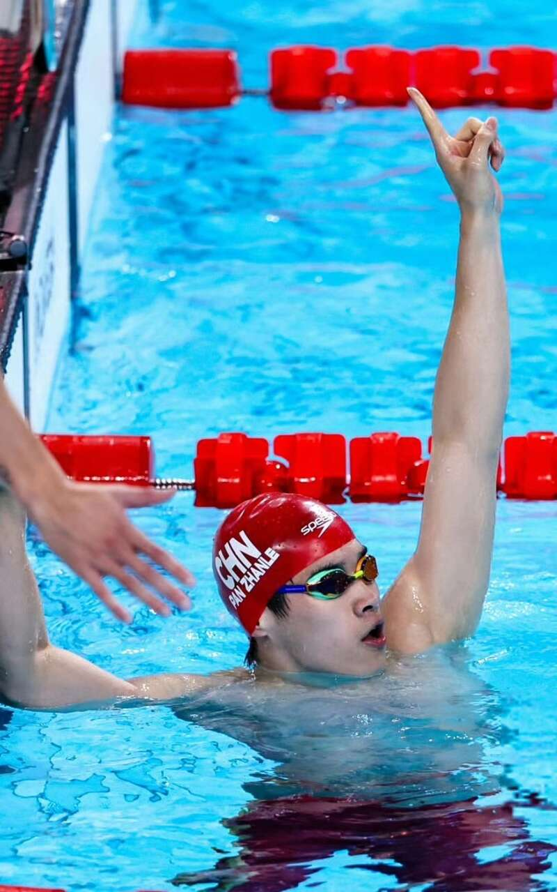

北京时间8月9日，据路透社报道，美国反兴奋剂机构（USADA）允许服用兴奋剂的运动员不接受惩罚继续参赛，并让他们充当“卧底线人”，真是离谱！

美国媒体指责中国运动员药检呈阳性，名将菲尔普斯甚至表示应该终身禁赛，而中国方面也已经做出强势反击，戳穿了美国反兴奋剂机构的双标嘴脸。
如今，路透社又曝光了美国方面的更离谱操作：服用兴奋剂的美国运动员可以不受惩罚的继续参赛，但要被USADA用作“线人”！真是美剧情节的真实上演。
据悉，这种卧底行为已经持续长达10年之久，而美国一直没有将此事通知WADA，直到2021年才被制止。美方辩称，“线人”为美国联邦执法部门调查人口和毒品贩运计划提供了情报。USADA首席执行官泰加特表示，利用违规运动员“揭露”其他运动员，并收集涉及体育兴奋剂和贩运的有组织犯罪分子的情报“是正确的做法”。
但WADA义正辞严地表示，从未允许“让药物作弊者继续参加比赛以获取他人罪证”，美国的做法违反了《世界反兴奋剂条例》以及USADA自己的规定。
根据USADA签署的《世界反兴奋剂条例》，对反兴奋剂机构调查提供“实质性协助”的运动员确实可以申请在被起诉后暂停部分禁令，但没有具体措辞表明，违反反兴奋剂条例的运动员可以不首先受到任何起诉和惩罚而继续参加比赛。
Advertisements